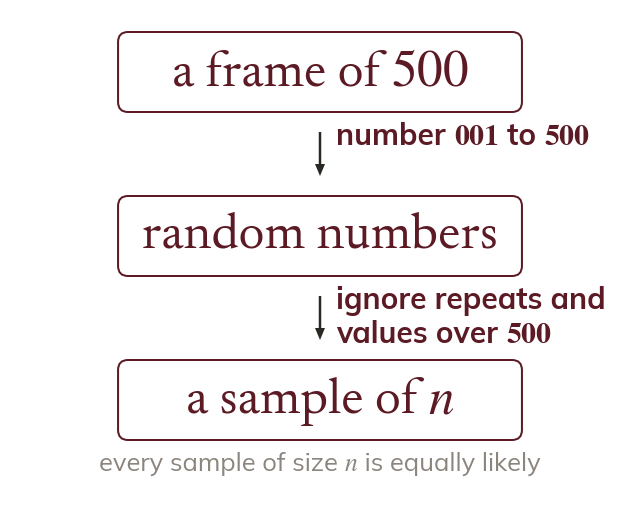
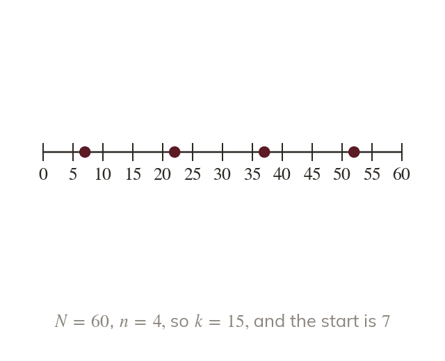
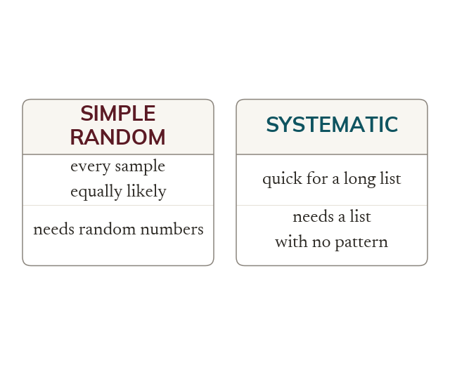
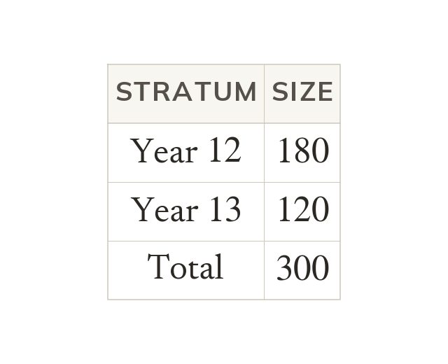
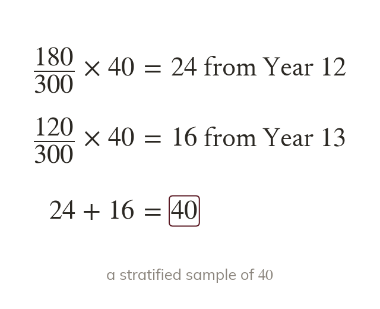
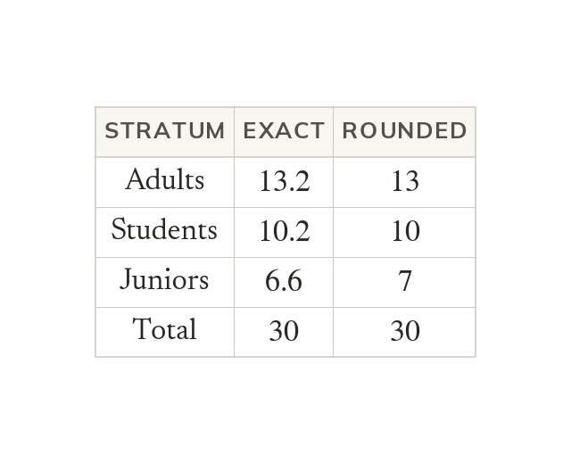

Simple random sampling
Number every item in the sampling frame. Then choose numbers with a random number generator, ignoring repeats.
A sample is useful only if it is chosen fairly, and a random method takes the choice out of the chooser's hands. The next lesson looks at the methods that are not random, and when each kind is the better choice.
Work down the page at your own pace. Write every answer in your book first, then click to check it.
Read each card, then follow the worked examples one step at a time.

Number every item in the sampling frame. Then choose numbers with a random number generator, ignoring repeats.

Find the interval Choose a random start from to then take every kth item.

Both need a numbered sampling frame. A systematic sample is fair only if the list has no pattern in it.
Pick an answer. If it's wrong, the feedback tells you which mistake it was.
Write the blanks in your book first, then tap each one to check.
Read each card, then follow the worked examples one step at a time.

A stratified sample splits the population into groups, called strata, that do not overlap. A simple random sample is taken from each stratum.

Each stratum's share of the sample matches its share of the population. The number is stratum size ÷ population size × sample size.

Round each number to a whole number. Then check that the numbers still add to the sample size.
Pick an answer. If it's wrong, the feedback tells you which mistake it was.
Write the blanks in your book first, then tap each one to check.
Finished? Next lesson: 12.S1.3 Non-Random Sampling.
For each skill, tap the one that is true for you today. Your Revise pages start with anything you mark Not yet.
Your ratings are saved on this device only.
Log in, then search for a code to practise that skill.